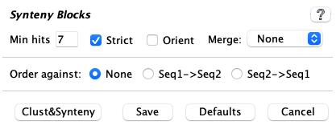
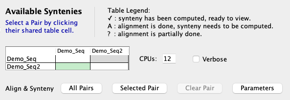

| This document discusses building a SyMAP v5 database. It always applies to the latest release. | |
| Referenced external docs 1. Introduction 2. Requirements 3. Install SyMAP | 4. Demo 5. New project 6. General |
| Transcriptome Analysis and Comparative Transcriptomes, see TCW. | |
1. Introduction
| Overview | Publications | Steps for finding synteny | Go to top |
Overview
SyMAP is a system for computing, displaying, and analyzing syntenic alignments between divergent eukaryotic genomes. It is designed for the comparison of a few genomes at a time (i.e. 2-4) where synteny is computed between each pair.|
Its features include the following:
|

|

| 
| 
|
Publications
SyMAP is freely distributed software, however if you use SyMAP results in published research, you must cite one or both of the following articles along with the external program MUMmer1,2.
C. Soderlund, M. Bomhoff, and W. Nelson (2011)
SyMAP: A turnkey synteny system with application to plant genomes.
Nucleic Acids Research 39(10):e68.
C. Soderlund, W. Nelson, A. Shoemaker and A. Paterson (2006)
SyMAP: A System for Discovering and Viewing Syntenic Regions of FPC maps
Genome Research 16:1159-1168.
The back-end processing of SyMAP runs MUMmer1,2 for the alignments (included in the tarball)
and computes the synteny block from the alignment results. The SyMAP synteny algorithm is described
in the above two publications, though there are many unpublished updates since publication.
Steps for finding synteny
The following three scripts are provided in the tar file.| ./xToSymap | Format files from NCBI and Ensembl into a SyMAP friendly format. | |
| ./symap | Build the SyMAP synteny database; view and query | |
| ./viewSymap | View and query the database results |
Follow the steps below to get started with SyMAP.
| 1. | Use Linux or MacOS. | See system requirements. |
| 2. | Requirements. | Set up Perl, Java and MySQL . |
| 3. | Install SyMAP. | It is a simple unzip; see Installation and SyMAP MySQL parameters. |
| 4. | Run the demo. | Highly recommended. See running the demo. |
| 5. | Prepare input files. | FASTA sequence and optional GFF annotation.
See Input and Creating a new project. |
| 6. | Load the files into SyMAP. | Select See Loading project. |
| 7. | Compute alignments and synteny. | Select See Align&Synteny. |
| 8. | View results. | See User Guide for a detailed description of viewing and querying the results. |
2. Requirements
| System Requirements | Tested platforms | Datasets and Timings | Disk space | Perl, Java, MySQL | Go to top |
System Requirements
The machine must be a Linux or MacOS 64-bit machine with sufficient memory for your dataset.The largest component of SyMAP execution time is running MUMmer1,2. The time and memory for MUMmer all depends on the genomes sizes, complexity and similarity. If MUMmer fails, it is often due to insufficient memory; see the MUMmer document, which explains how to determine the problem and ways around it. It explains how to run MUMmer on a different machine and port the results to the symap_5/data/seq_results directory. The results in Tested datasets and timings gives an idea of compute times and memory.
If SyMAP runs out of memory, see Trouble Shoot.
For viewing alignments with viewSymap, CPU and memory needs are typically negligible, unless you are performing queries on more than 4-5 genomes at once.
Tested platform
SyMAP has been tested on the following:| Machine | MySQL | Java | Core (CPU) | Memory | Purchased |
| v5.6.6 and later: | |||||
| 1. | MySQL v8.0.42 | 24 from Oracle | M4 12-Core | 48Gb | 2025 |
| v5.4.1 and later: | |||||
| 2. | MySQL v8.0.33, MariaDB 11.0.2 | 8, 15, 17, 18, 20 from
Adoptium and Oracle | 3.2 GHz 6-Core | 64Gb | 2018 |
| 3. | MySQL 8.0.33 | 17 | Nanode | 1Gb | 2023 |
| v5.4.0 and earlier: | |||||
| 4. | MariaDB v10.4.12 | 1.8 | 2.3 GHz 24-Core | 128Gb | 2011 |
Tested datasets and timings
- MacOS M4 with 48Gb has been tested with the following:
- The complete Homo sapiens (24 chrs, 3Gb) with Mus musculus (21 chrs, 2.7Gb).
To get MUMmer to run successfully, it was necessary to uncheck Concat. - Self-synteny of the complete Homo sapiens (24 chrs, 3Gb).
- Chr 5,17,X,Y of Homo sapiens (478Mb) and Pan troglodytes (447Mb);
Chr 11,13,X,Y of Mus musculus (504Mb); Chr 11,19,X of Oryctolagus cuniculus (257Mb). - Arabidopsis thaliana (5 chr, 119Mb), Brassica rapa (10 chr, 297Mb),
Brassica oleracea (9 chr, 447Mb).
- Self-synteny of Arabidopsis thaliana (5 chr, 119Mb), Brassica rapa (10 chr, 297Mb),
Oryza Sativa (12 chr, 373Mb) and Zea Mays (10 chr, 2.1Gb).
- Draft Prunus yedoensis (250 scaffolds, 408Mb) and Peach Prunus persica (8 chr, 227Mb).
Pyeudo.Peach was the result of ordering Pyedo against peach (8 chr, 270Mb).
Times are those reported in the SyMAP output, which uses the Java system time functions (clock times are greater than the Java CPU system times). Repeated execution can result in times varying by approximately +/-5secs. All the following results use 4 CPUs (thread/core) and are amino acid alignment except for the three self-syntenies, which used nucleotide alignment and 6 CPUs.
The exact time for running MUMmer on Maize x self is approximate; there were 55 alignments that took anywhere between 1-5 hours each; I did not run it all at once. Maize has a lot of duplication, hence, the longer time.Species MUMmer SyMAP Size Hsa x Mus (All chr) 30h:45m 5m:13s 3Gb x 2.7Gb, large genomes Hsa x self (All chr) 7h:45m 8m:28s 3Gb x 3Gb Hsa x Pan (partial) 16h:40m 0m:35s 478Mb x 447Mb, closely related Hsa x Mus (parital) 0h:55m 0m:04s 478Mb x 504Mb A.thal x B.oler 0h:31m 1m:14s 119Mb x 447Mb B.raba x B.oler 4h:23m 4m:12s 297Mb x 447Mb, closely related Peach x Pyedo 0h:44m 1m:29s 227Mb x 408Mb, Pyedo ordered by peach Peach x Pyedo.Peach 0h:40m 0m:20s 227Mb x 270Mb B.raba x self 0h:15m 1m:17s 297Mb x 297Mb Maize x self >48hr 28m:52s 2.1Gb x 2.1Gb, duplication - The complete Homo sapiens (24 chrs, 3Gb) with Mus musculus (21 chrs, 2.7Gb).
- MacOS x86_64 with 64Gb has been tested on 2-4 above. For comparison, the following A&S was computed
with 4 CPUs; note the longer time for the synteny computation on the older Mac machine.
Species MUMmer SyMAP A.thal x B.oler 0h:33m 4m:06s - Linode nanode with 1Gb was too small to run MUMmer, so the MUMmer demo result files were transfered to the data/seq_results/demo_seq_to_demo_seq2 directory. This allowed all other features to be tested on the demo, including running the synteny algorithm without the alignment. Also, two tiny input files were used to test MUMmer.
- Linux amd64 with 128Gb was used extensively on large plant genomes.
To align rice x maize (400Mb x 2365Mb) required a total of 1h:3m using 8 CPUs
Disk space
Given the amazing disk space available for all modern computers, disk space should not be a problem. MUMmer produces a .mum and .delta file; SyMAP only uses the .mum file so it removes the MUMmer alignment .delta file. For the full Homo sapiens x Mus musculus, the resulting data/seq_results/Hsa_to_Mus/align directory was 573M.You can remove the data/seq_results/<project1_to_project2>/ directory after SyMAP has finished the synteny computation, but it is strongly recommended that you leave them if you have the space. There are frequent SyMAP updates with improvements to the clustering and synteny computations; if you have kept these files, then you can update your database in very little time (note the >30h for MUMmer for Hsa x Mus versus 1m:37s for the synteny). Also, you can easily try different parameters for the clustering and synteny stages.
If you do not want SyMAP to remove the .delta, use the "-mum" command line argument.
Perl, Java and MySQL
Perl: This is for MUMmer; see MUMmer manual, section onJava: You must have Java version 17.0.11 or later. The released symap.jar file has been compiled with Java 17.0.11, which is upward compatible.
MySQL: If your machine does not have MySQL or MariaDB, download and install it. For example, MySQL can be downloaded from dev.mysql.com. On a personal MacOS, simply download the '.dmg' file and following the instructions. On a work server, the system administrator may need to install it.
Important Note: The default settings of MySQL are poorly suited for large-scale data storage. You will want to adjust the parameters innodb_buffer_pool_size and innodb_flush_log_at_trx_commit as described in Trouble Shoot MySQL.
3. Install SyMAP
| Tarball | Externals executables | MySQL parameters | Go to top |
Tarball
Installation consists of unzipping the download tarball using the command> tar -xf symap_5.tar.gzThis can be done anywhere and it creates a directory called symap_5. You can move this directory later if desired. The contents are:
LICENSE README data/ ext/ java/ scripts/ symap.config symap viewSymap xToSymapData: The data/ directory contains a seq/ sub-directory, which contains the demo files, and is the default location for all input sequence files. The symap script expects to find the data directory, the viewSymap does not.
External executables
The ext/ directory contains the external programs MUMmer1,2 for sequence alignment, and MAFFT6 and MUSCLE7 for interactive MSA alignment (for Queries). The directory contains:README mummer/ mummer4/ muscle/ mafft/Each has subdirectories:
| Subdirectory | OS (Architecture) | Note |
| lintel64 | Linux | |
| mac | Mac OS X (x86_64) | |
| macM4 | Mac OS X (M4 silicon) | No muscle executable |
SyMAP will determine which subdirectory to use.
If you compile your own executables for a different machine (architecture), do the following:
- Under mummer and mafft, make a directory with your machine name.
- Put the executables under this directory in the exact same way as shown for lintel64.
- In the symap configuration file (default symap.config), add a line
arch={your directory architecture name}
For MUMmer, see Executables and Using MUMmer4. On MacOS, you may also need to view MacOS externals.
MySQL parameters for SyMAP
Parameters for accessing the MySQL database should be set in the symap.config file in the main symap directory, as follows:
| Database Parameters | |
| db_name | Name of the MySQL database, which SyMAP will create when it first reads symap.config. It is standard to start the name with symap, e.g symapDemo. |
| db_server | The machine hosting the MySQL database, e.g. myserver.myschool.edu. If using your local machine, enter localhost. |
| db_adminuser | MySQL username of a user with sufficient privileges to create a database. It is also necessary for loading, deleting and running synteny. |
| db_adminpasswd | Password of the admin user. |
| db_clientuser | Optional: MySQL username of a user with read-only access. This is only necessary if you want a machine to run viewSymap as read-only. |
| db_clientpasswd | Optional: Password of the client user (if db_clientuser is non-blank). |
Example symap.config.
db_name = symapDemo db_server = localhost db_adminuser = <adminid> db_adminpasswd = <password> db_clientuser = db_clientpasswd =To use an alternative file than symap.config, use the "-c" command line argument, e.g.
>./symap -c symapTmp.configThis is useful if you have multiple SyMAP databases.
4. Demo
| Running the demo | Two genome synteny | Draft ordering | Self-synteny | Go to top |
Running the Demo
If you have not used SyMAP before, it is essential to run the demos. After you have installed MySQL, do the following:- Change into the symap_5 directory.
- Edit symap.config and enter database
and host information (see MySQL).
- From the command line, type ./symap.
The first time you run SyMAP, it will create the database with information written to the terminal, e.g.
Creating database 'symapDemo' (jdbc:mysql://localhost/symapDemo?characterEncoding=utf8).
It will check your MySQL variables; if there are any "Suggested" changes, see Trouble Shoot MySQL.
It will also check that the provided external programs (e.g. MUMmer) are executable; if it shows any problems, see Executables. For MacOS, you may also need MacOS externals.
Demo two genome synteny
| Executing ./symap will bring up the | |
|
Check A link Load All Projects will be displayed at the top of the right panel; select it to
load the projects, which will take several minutes.
If loading the | Project Manager
|
|
When done, the In the Click the |

|
|
The When done, the table will have a checkmark (✓), signifying that the synteny is available for viewing. |

|
|
Click
Once the alignments are computed, the A&S parameters can be experimented without having to redo the alignments. This is done by changing the options on the pair Parameters panel. See Demo Results for the results from
using the |

|
{kind=link}
Demo draft ordering
|
From the |  |
|
Run the It is recommended to use Cluster Algo1 and Synteny Original. |

|
{kind=link}
The ordering algorithm creates the following files and directories:
1. File of ordered contigs: It writes the order of the contigs along with whether they should be flipped to a file called /data/seq/demo_draft/demo_seq2_ordered.csv.
2. New project: It creates a new project directory called data/seq/draft_demo..demo_seq2 (the naming allows demo_draft to unambiguously be ordered against different genomes). This directory will contain a sub-directory /sequence which contains the sequence file.
3. FASTA sequence file of ordered sequences:
The sequence file will contain the ordered contigs that are flipped when appropriate.
The chromosome names correspond
to the order-against project (e.g.
The new project is shown on the
|
Run the |

|
Demo self-synteny
| To perform self-synteny, select the cell for | 
|
5. New project
| Create | Input and directory | Load project | Align & Synteny | Draft ordering | Self synteny | Cancel | Go to top |
Create a new project
Database name: The parameterThe following gives an outline of the steps and important details of the directory structure, linking to the appropriate sections in Interface and parameters document, which details all functions and parameters.
Input and directory structure
Input: See Input for description of the sequence (FASTA) and annotation (GFF) files. The xToSymap interface takes as input NCBI or Ensembl files, and outputs the best input files for SyMAP, along with automatically creating the correct directory structure.Project-name:
Each project has a
Project directory structure:
Each project has a directory as follows:
/data/seq/<project-name>
The default location for sequence and annotation files is:
/data/seq/<project-name>/sequence /data/seq/<project-name>/annotationTo indicate to the
- Create these sub-directories under /data/seq and put your files there,
e.g usingproject-name=foobar :cd data/seq mkdir foobar cd foobar mkdir sequence mkdir annotation
Move your FASTA file(s) to data/seq/<project-name>/sequence (e.g. data/seq/foobar/sequence) and your optional GFF files(s) to data/seq/<project-name>/annotation (e.g. data/seq/foobar/annotation) - Create these sub-directories under /data/seq and use soft links to point to the file locations,
e.g usingproject-name=foobar :cd data/seq mkdir foobar cd foobar ln -s <location of directory of sequence files> sequence ln -s <location of directory of annotation files> annotation
- Use the
Add project button on thesymap interface (lower-left corner) to add the project name to the data/seq directory. Use the project's parameter panel to enter the location of the sequences and optional annotation files into theSequence files andAnno files parameters.
For options 1 and 2, it is not necessary to enter the locations of the files in the project parameter panel since both use the default locations.
All sub-directories in data/seq are shown on the left-panel of the
|
Each project is shown with its |

|
Load project
See project parameters on setting the parameters. See Load for loading a project.| Go to top |
Align&Synteny
| See Parameters
on setting the pair parameters for the this step.
See CPU and Verbose for a description of these two options. Then select |  |
{kind=link}
Align&Synteny files: The result files are in the following directory:
/data/seq_results/<project1>-to-<project2>/alignAs mentioned in Disk, after the database is complete, these can be removed. However, sometimes SyMAP version updates require the project files to be reloaded and/or the synteny to be recomputed; if these files remain, the existing MUMmer files will be used, which saves a lot of time.
The log files are in the /logs directory, see Running MUMmer for more details.
See Using MUMmer with SyMAP for a discussion on how it works in SyMAP, trouble-shooting, and running MUMmer externally (i.e. if your local machine does not have enough memory or CPUs, you may need to run it on a bigger machine).
Incomplete alignment If SyMAP completed the alignment, e.g. the demo /align directory will have the following files:
-rw-r--r--@ 1 cari staff 0B Apr 10 10:28 all.done -rw-r--r--@ 1 cari staff 1.2M Apr 10 10:28 demo_seq_cc.demo_seq2_f1.mum -rw-r--r--@ 1 cari staff 0B Apr 10 10:28 demo_seq_cc.demo_seq2_f1.mum.done -rw-r--r--@ 1 cari staff 541K Apr 10 10:27 demo_seq_cc.demo_seq2_f2.mum -rw-r--r--@ 1 cari staff 0B Apr 10 10:27 demo_seq_cc.demo_seq2_f2.mum.done
- The 'all.done' indicates that the all alignments completed.
- If 'all.done' does not exist, SyMAP will perform any alignments that do NOT have a corresponding 'mum.done'.
If the
Concat setting has been switched between the previous and current run, this will not work correctly. - If the user supplied the alignments (Supply MUMmer files), there may not be 'mum.done' files but there should be an 'all.done', so it is assumed they are all done.
Draft alignment and ordering
If you are ordering the draft sequence against a closely related sequenced genome, see demo draft on how to proceed. It is strongly suggested you run the demo! In a nutshell, the steps are:- Load both sequences.
- Open the pairs's Parameters panel.
At the bottom of the panel, select the radio button that indicates ordering your draft against
a complete sequence (e.g. Draf->Seq2). Leave all others parameters as the defaults!
- Run the
Align&Synteny (A&S) . At the end, you will see a new project with the twoproject-names separated by ".." in the left panel. It will contain:- A sequence directory with a ".fa" FASTA file. Any scaffolds matching the
Order against genome will be assigned the same chromosome name. All scaffolds aligning to anOrder against chromosome will be appended together in order with 100 N's between each scaffold. Any extra sequences will be put in ">Chr0". - An annotation directory with a ".gff" file that specifies where the gaps are.
- A sequence directory with a ".fa" FASTA file. Any scaffolds matching the
- Load the new project. Then run
A&S between this new project and the original whole genome project.
If the draft sequence is in too many sequence contigs,
it takes a long time for the MUMmer comparisons. Also,
the displays are very cluttered to the point of unreadable, but these will generally be merged in step 4 above, so the
new display is fine. Nevertheless, you may want to remove the smallest contigs. This can be done by
limiting the number of sequence contigs by setting
Self-synteny
| To perform self-synteny, select the cell for the same project (it turns green) followed by | 
|
- Chromosome to itself: The Align&Synteny
Parameters panel has an option to set
Self Args , which is only used when comparing the chromosome sequence file to itself. - Make sure that the
Cluster Hits Algorithm 1 option is selected.
|
A better demonstration than the demo is to download Arabidopsis thaliana from NCBI, convert it with the NCBI convert script, and run the self-synteny. It took 16 minutes with one processor on a Mac Mini (2018) with 64Gb main memory. The dot plot is shown on the right (click on the image for a closeup view). The | 
|
Cancel
| The Occasionally, the If MUMmer is running when you | 
|
6. General
| Update | How SyMAP works | FPC | References | Go to top |
How to update SyMAP with a new release
If you have been working with SyMAP and have existing projects:- If the symap.jar is available from the download site and there are only changes to it, download it and replace the one in symap_5/java/jar.
- Put the new symap_5.tar.gz in a permanent location and untar it.
- Replace the /data and symap.config from your previous SyMAP location to this new location.
- This approach is safest as it acquires all changes (e.g. scripts) except for changes to the demo files.
- Put the new symap_5.tar.gz in a temporary location and untar it.
- Move symap_5/java/jar/symap.jar to the java/jar location of your permanent SyMAP.
- Check to see if there are any /scripts or /ext changes that need to also be copied over.
How SyMAP Works
This section provides a brief overview of the SyMAP processing steps; for more, see the SyMAP published papers4,5. The processing has four phases:The sequences are written to disk*, with gene-masking if desired. In the alignment, one species is "query" and the other is "target". The query is the one with alphabetically the lesser name (e.g. A<B). The query sequences are written into one large file, while smaller target sequences are grouped into larger FASTA files of size up to 60Mb, for more efficient processing in MUMmer. There is an option
Anchor Clustering and Filtering:
The raw anchor set consists of the hits found by MUMmer, which are filtered and clustered for input to the synteny algorithm.
Algorithm 1 (modified original) is good for medium-to-high divergent genomes, aligning draft sequence, self-synteny, and genomes with little or no annotation. The MUMmer hits are first clustered into gene, or putative-gene hits. This is done by clustering the hit regions on each sequence, and then defining new "gene" hits which connect these regions. For example if three separate exons hit between two genes, they will be clustered into one "gene" hit having a combined score equal to the sum of the raw hit scores. Clustering is by gene if the hits overlap annotation, otherwise, it creates "candidate genes" from hits that do no overlap annotation.
The clustered "gene anchors" are then filtered using a version of
reciprocal-best filtering which is adapted for retaining duplications and
gene families. For each pair of genes (or putative genes) which is
connected by a clustered anchor, the retained anchors must be among
the top two anchors by score on both sides (top-2 allows for one
ancestral whole-genome duplication). An anchor will also be retained if its
score is at least 80% of that of the 2nd-best anchor on each side (this
allows for retention of gene family anchors). These filter parameters
may be adjusted through the
Algorithm 2 (exon-intron) is good for low-to-high divergent genomes with good annotation.
It directly maps hits to the exons and introns. Hits aligning to un-annotated regions are clustered separately.
There are many more parameters for
this approach, as the hits are filtered based on the parameter values.
Synteny Block Detection:
After the clustered anchors are loaded into the database, the synteny
synteny block algorithm runs. This algorithm looks for approximately-collinear
sequences of anchors, subject to several parameters including (A) Number
of anchors; (B) Collinearity of the anchors; (C) Amount of "noise" in the
surrounding region (to help reject false-positive chains). Criterion A can
be adjusted in the
* Note that the sequences are re-written from the database to the disk for three reasons: (A) To allow re-grouping for efficiency; (B) To ensure elimination of invalid characters; (C) To mask non-gene regions, if desired. This also ensures that sequences names will match those in the database, and prevents problems caused by moving the source sequences on disk.
FPC project
For working with FPC8,9, it is suggested you use release v5.0.8 from AGCoL.- It has the FPC demo files.
- It has BLAT10 in the /ext directory.
- It has the tar file doc.tar.gz of the documentation.
- The AGCoL documentation applies to this release. See AGCoL System Guide.
- This is the last release made from AGCoL, so the documentation will stay consistent.
- It is also available from Github.
References
1 Kurtz, S., Phillippy, A., Delcher, A.L., Smoot, M., Shumway, M., Antonescu, C., Salzberg, S.L. (2004). Versatile and open software for comparing large genomes, Genome Biology, 5:R122 Marcais, G., A.L. Delcher, A.M. Phillippy, R. Coston, S.L. Salzberg, A. Zimin (2018). MUMmer4: A fast and versatile genome alignment system, PLoS computational biology, 14(1): e1005944.
3 Krzywinski, M., J. Schein, I. Birol, J. Connors, R. Gascoyne, D. Horsman, S. Jones, M. Marra (2009). Circos: An information aesthetic for comparative genomics. Genome Research doi:10.1101/gr.092759.109.
4 Soderlund, C., Nelson, W., Shoemaker, A., and Paterson, A.(2006). SyMAP: A system for discovering and viewing syntenic regions of FPC maps. Genome Res. 16:1159-1168.
5 Soderlund, C., Bomhoff, M., and Nelson, W. (2011). SyMAP: A turnkey synteny system with application to multiple large duplicated plant sequenced genomes. Nucleic Acids Res V39, issue 10, e68.
6 Katoh, Standley (2013). MAFFT multiple sequence alignment software version 7: improvements in performance and usability. Molecular Biology and Evolution 30:772-780.
7 Edgar, R (2004). MUSCLE: a multiple sequence alignment method with reduced time and space complexity. BMC Bioinformatics 113.
8 Soderlund, C., S. Humphrey, A. Dunhum, and L. French (2000). Contigs built with fingerprints, markers and FPC V4.7. Genome Research 10:1772-1787.
9 Engler, F., J. Hatfield, W. Nelson, and C. Soderlund (2003). Locating sequence on FPC maps and selecting a minimal tiling path. Genome Research 13:2152:2163.
10 Kent, J. (2002) BLAT--the BLAST-like alignment tool, Genome Research 12:656-64.
| Go to top |
Email Comments To: symap@agcol.arizona.edu